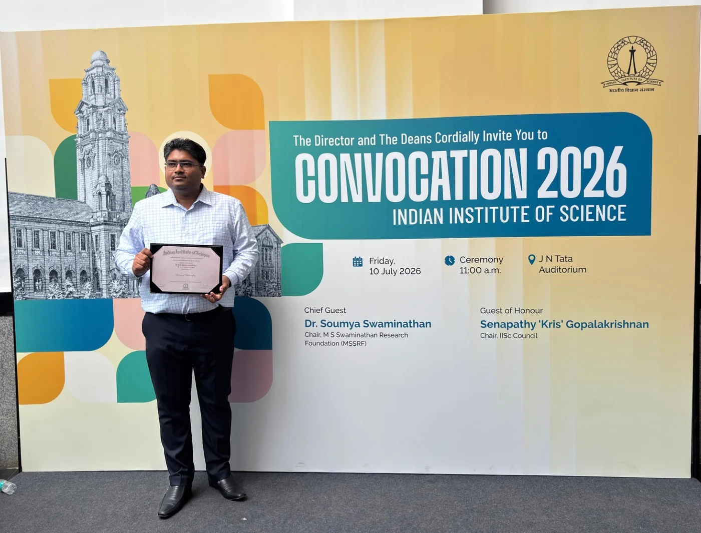

Degrees · Tools · Certifications
Education & Skills
Mechanical engineering, ergonomics and computation, plus formal training in project management.
Education
Degrees
-
2017 – 2026
BengaluruPh.D., Faculty of Engineering
Indian Institute of Science, Dept. of Design and Manufacturing- Thesis: Unified Effort Measure for Natural Posturing of Digital Humans, supervised by Prof. Dibakar Sen.
- Coursework: Data Structures & Algorithms, Robotics, Geometric Modeling for CAD, Applied Ergonomics.
- JRF and SRF fellowships, Government of India.
- Degree conferred at the IISc Convocation, 10 July 2026.


-
2011 – 2015
AligarhM.Tech., Mechanical Engineering (Ergonomics)
Aligarh Muslim University- Gold Medalist, CGPA 9.67/10; project and dissertation graded 10/10.
- Project: Cognitive Performance of Skilled Operators. Dissertation: Animal Ergonomics in the Design of Bullock Cart.
-
2006 – 2010
AligarhB.Tech., Mechanical Engineering
Aligarh Muslim University- CGPA 8.93/10. Thesis: Hydrogen Fired Gas Turbine Systems, Grade A (Distinction).
- GATE 2010: 95.97 percentile.
Toolkit
Skills
Modelling and maths
UAV and robotics
Ergonomics and human factors
CAD and simulation
Management
Credentials
Certifications
- Google Project Management Professional Certificate
- Six Sigma Black Belt; Agile Project Leadership (PMI)
- Program Management for IT Professionals; Scrum
- Construction Management: Planning and Scheduling
- O&M of Thermal Power Stations, NPTI Durgapur (ID LT/ER/111)
- Data Science, HarvardX (Harvard University)
- Computational Geometry Algorithms with C++; Modern OpenGL; Qt Core; Data Structures & Algorithms
- Basic Life Support: First Aid, CPR and AED
Recognition
Honours
- Gold Medal, M.Tech, Aligarh Muslim University
- JRF and SRF fellowships, Government of India
- Topped the BPSCL 2012 Management Trainee (Technical) batch
- Outstanding (A+, top 10%) rating at BPSCL, 2014–2017
- Selected for L&T's Management Development Training Programme
- Safety Quiz and Vigilance Day essay prizes (BPSCL, L&T)
Beyond work
Leadership and service
Treasurer, Hindi Samiti
Ran the annual budget, brought in sponsors, raised collections by 25% and engagement by 40%.
Editor-in-Chief, Manas
Edited, designed and published the annual magazine of IISc's Official Language Unit.
Senate Library Committee
Student representative at the JRD Tata Memorial Library; also Academic Coordinator of the Students' Council.
Also: student volunteer, ReimagineWaste IISc (2017–2021); member and former event manager, Rameshim International Foundation.